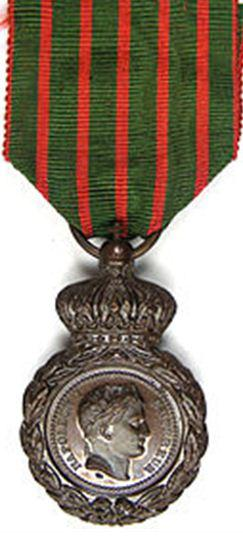
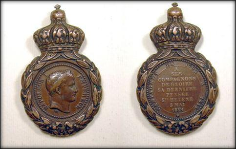
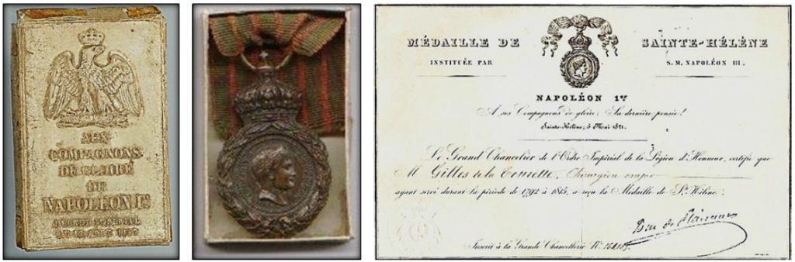
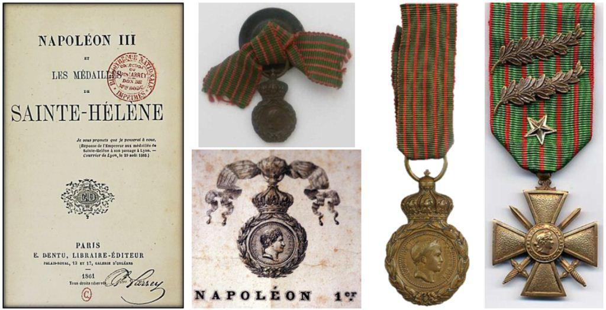
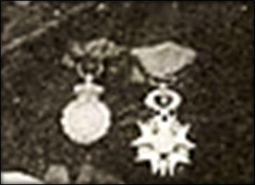
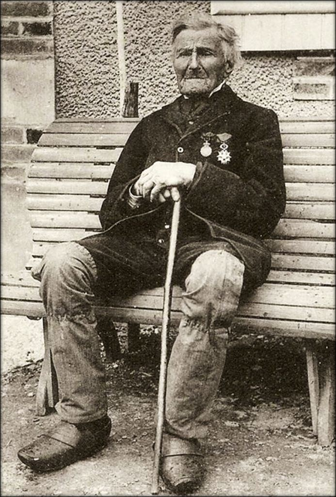

REVUE MÉTHODE
http://revuemethode.org
Merci pour votre message !

S’il est bien un exemple qui illustre parfaitement cette réflexion, c’est bien la création de la médaille de Sainte-Hélène en 1857 par l’empereur Napoléon III.
La médaille de Saint Hélène est intéressante à plusieurs points de vue. Tout d’abord sur le plan purement phaléristique, elle instaure la création de la première médaille commémorative de l’histoire des médailles militaires en France.
En effet, comme nous aurons l’occasion de le découvrir lors d’un prochain article, mis à part le médaillon de vétérance créé par le roi Louis XV le 16 avril 1771, les soldats français n’avaient pas de décorations spécifiques pour récompenser ou commémorer leurs états de service.
Il existait bien sous l’Ancien Régime (Monarchie), des décorations militaires mais elles étaient réservées aux seuls officiers, soit pour l’ordre royal et militaire de Saint-Louis (5 avril 1693) s’ils étaient catholiques (mais grand innovation, sans être nécessairement nobles) ou soit pour l’Institution du Mérite Militaire (10 mars 1759) s’ils étaient protestants.
De plus si l’ordre national de la Légion d‘honneur, institué le 19 Mai 1802 par le futur empereur Napoléon Ier, allait officiellement permettre de récompenser tous les mérites (civils et militaires) sans distinction de naissance ou de religion, il n’empêche que peu de soldats ou de sous-officiers furent réellement décorés de la Légion d’honneur au profit des officiers supérieurs et généraux.
Se posait donc toujours en cette fin de XIXème siècle, la question d’honorer ceux qui avaient servis dans les armées de la première République (1792 à 1804) puis du premier Empire (1804 à 1815).
Cette question était particulièrement d’actualité, puisque ces armées - à l’inverse des armées d’ancien régime qui étaient des armées professionnelles – étaient des armées populaires basées sur la conscription obligatoire (Loi de la Convention du 20 février 1793, instituant que tout citoyens de 18 à 40 ans, non mariés ou veufs sans enfants, était mis en état de réquisition permanente, complétée par la fameuse loi Jourdan-Delbrel du 5 septembre 1798 qui établissait le service obligatoire pour tous les célibataires de 20 à 25 ans).
Après la restauration monarchique des Bourbons (de 1815 à 1830) puis la monarchie constitutionnelle du roi louis-Philippe (1815-1848), et d’un « bout » de 2ème république (1848-1852), le retour à l’empire par Napoléon III (neveu de Napoléon Ier) justifiait une reconnaissance officielle des soldats ayant courageusement servis pendant toutes ces guerres révolutionnaires et impériales.
L’idée officielle de de cette médaille était naturellement de récompenser les soldats vétérans survivants par une médaille qui les rattachait directement à la mémoire de l’Empereur Napoléon Ier qu’ils avaient suivi sur tous les champs de bataille européens.
Indépendamment de ces considérations altruistes, le nouvel empereur Napoléon III était également conscient du manque de légitimité politique de son accession au trône, causée à la suite d’un coup d’état en 1851.
Il lui fallait donc appuyer son régime politique nouveau sur une base populaire.
Pour cela il associa à une manifestation idéologique de secours aux vétérans des guerres révolutionnaires et impériales - dont beaucoup étaient dans le besoin - des considérations plus tactiques et idéologiques.
En effet, avec la création de la médaille de Sainte-Hélène, l’empereur des français souhaitait resserrer les liens avec son oncle dont le souvenir idéalisé perdurait encore très largement dans les campagnes françaises.
Par la création de cette médaille, non seulement Napoléon III affirmait sa filiation idéologique et politique directe avec le « Grand Napoléon » mais aussi et surtout il contribuait à la résurgence d’un l’idéal bonapartiste ou le talent et le mérite étaient reconnus sans distinction de naissance ou de fortune, s’attachant ainsi une légitimité populaire et sociale, auprès d’une classe de français sur lequel pourrait s’appuyer son nouveau régime.
D’ailleurs son oncle Napoléon Ier n’avait-il pas fait la même chose avec la Légion d’honneur, et la médaille militaire qu’il venait de créer le 22 janvier 1852 n’était-elle pas dans la même droite ligne de pensée ?
Le texte même accompagnant la médaille n’était pas innocemment choisie pour la médaille de Sainte Hélène, avec cet exergue prémonitoire : « A ses compagnons de gloire, sa dernière pensée » !
Par ces mots, l’empereur Napoléon III manifeste auprès de français (encore largement napoléoniens à défaut d’être bonapartistes) qu’il est le légitime exécutant testamentaire de son oncle, en récompensant ainsi ceux qui l’ont si fidèlement servis et dont il peut ainsi légitimement penser, qu’ils le serviront à son tour.
C’est médaille est donc particulièrement conçue comme une preuve éclatante de « coup politique » de « marketing électoral » et d’entretien d’un sentiment patriotique qui ne peut que servir son projet politique tout en redonnant aux « débris de la Grande Armée » une place sociale d’honneur que les monarchistes, les républicains et les jacobins avaient quelques peu rejetés « aux oubliettes de l’Histoire » en cette fin de XIXème siècle.
Pour servir ce projet, Napoléon III va se donner les moyens de diffuser largement la médaille.
Tout d’abord par le projet de loi qui est particulièrement large dans son attribution. En effet, le décret impérial du 12 août 1857, précise en son article 1er que :
« Une médaille commémorative est donnée à tous les militaires français et étrangers des armées de terre et de mer qui ont combattu sous nos drapeaux de 1792 à 1815. Cette médaille sera en bronze et portera, d'un côté, l'effigie de l'Empereur ; de l'autre, pour légende : Campagnes de 1792 à 1815. — « A ses compagnons de gloire, sa dernière pensée, 5 mai 1821 ». Elle sera portée à la boutonnière suspendue par un ruban vert et rouge ».

De son côté, la médaille est une très belle gravure de Désiré-Albert BARRE, graveur-général des Monnaies. Elle est en bronze ou cuivre patiné brun, d'une hauteur de 50 mm et d'une largeur de 31 mm pour l’ordonnance (grand modèle), mais des réductions, dites "médailles de petit module", étaient également vendues à part, au prix de 2 francs, et d’une taille de de 33 mm sur 20 mm (Elles ne portaient alors au revers que la mention « Ste-Hélène 5 mai 1821 »).
La médaille porte sur l’avers le portrait de profil de l’empereur Napoléon Ier couronné de feuilles de lauriers, avec l’exergue « Napoléon Ier, Empereur », puis à l’avers une inscription centrale « A ses compagnons de gloire, sa dernière pensée, Sainte Hélène 5 Mai 1821 « (date de sa mort) et autour du médaillon l’inscription « campagnes de 1792 à 1815 ». La médaille est entourée à l’avers comme au revers d’une couronne de lauriers finement tressées et couronnée, d’une couronne impériale dans laquelle passe une bélière. La médaille est suspendue à un ruban vert avec une alternance de 5 fines raies verticales rouges et sur chaque bord, un liseré rouge.
Concrètement, les maires de toutes les communes de France sont réquisitionnés pour recenser les anciens combattants et les inviter à se faire connaitre en vue d’apporter les preuves, notamment via leurs livrets militaires, de leur incorporation dans l’armée pendant ces 23 dernières années pour prétendent ainsi à la remise de la médaille.
Puis, les listes établies sont envoyées aux Préfet qui les transmettent à leur tour, après vérification, à la Grande Chancellerie de la Légion d’honneur à Paris. Celle-ci est alors chargée d’envoyer les médailles et certificats à chaque ancien combattant officiellement reconnu.
Les médailles sont adressées – GRATUITEMENT - à leurs titulaires dans une boite en carton, au couvercle recouvert par un papier blanc glacé avec l’aigle impérial EN RELIEF et une inscription éloquente:
« Aux compagnons de gloire de Napoléon Ier, Décret Impérial du 18 Août 1857 ».
La médaille est accompagnée d’un diplôme officiel, signé du Grand Chancelier et délivré par la Grande chancellerie de la Légion d’honneur. 
Cette organisation va ainsi permettre de récompenser plus de 405 000 soldats vétérans, dont environ 350 000 français et 55 000 étrangers. Ramené à la population française de l’époque (environ 36 millions) cela représente presque 10 % de la population française (de surcroit en âge d’être électeurs !).
La médaille de Sainte-Hélène n’est donc pas une médaille de mérite militaire, elle n’a pas été conçue pour récompenser des actions d’éclat pendant la guerre. Elle est bien instaurée uniquement pour récompenser - de manière commémorative - tous ceux qui ont servi dans les armées françaises contribuant ainsi à propager les idées révolutionnaires et impériales dans le monde occidental.
En ce sens elle est donc la première d’une longue série de médailles commémoratives militaires que la France va créer par la suite. On peut citer par exemple, les médailles commémoratives de : Campagne d’Italie (1859), campagne de Chine (1860), campagne du Mexique (1862), guerre de 1870-1871, Madagascar (1883) , Tonkin (1885), Dahomey (1892), Maroc (1809), Guerre 14-18 ; Guerre 39-45, Campagne de Syrie-Cilicie, Résistance, Corée, Indochine, Algérie, Commémorative française, etc…)
Indépendamment de toutes ces médailles commémoratives, c’est surtout à travers la croix de guerre 14-18 que la médaille de Sainte-Hélène va trouver une prospérité, bien imprévue par l’empereur Napoléon III... En effet, sans doute marqués par les retentissement de cette médaille commémorative des « dernières pensées de l’Empereur » et souhaitant renouer avec cette tradition d’armée populaire et nationale républicaine, les législateurs de la croix de guerre 14-18, le 8 Avril 1915, décidèrent que la première croix de guerre de l’histoire phaleristique française, porterait le même ruban que celui de la médaille de Sainte-Hélène, c’est-à-dire : « Une alternance de 6 raies verticales vertes de 4,5 mm et de 5 raies verticales rouges de 1,8 mm et sur chaque bord, un liseré rouge de 1 mm. ».
Ainsi quasiment un siècle après la mort de l’Empereur Napoléon Ier, plus de deux millions de « poilus », soldats français de la grande-guerre 14-18, porteront à leur boutonnière le ruban vert liseré de rouge de la médaille de Sainte-Hélène sans même le savoir.

OM
 
REVUE MÉTHODE
http://revuemethode.org
Partager cette page